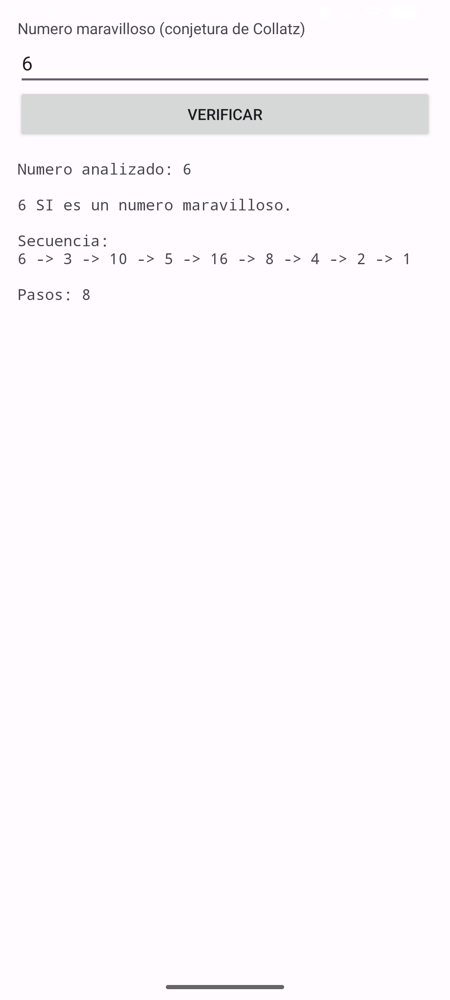
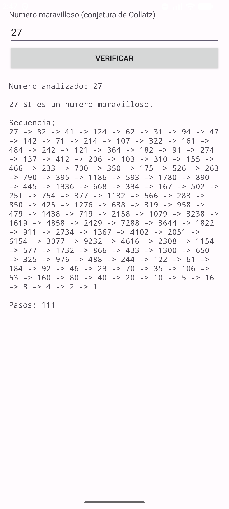

| Asignatura: | Desarrollo de Aplicaciones Móviles Nativas |
| Tarea: | Tarea 5: Número maravilloso |
| Alumno: | Angel Frausto Robles |
| Grupo: | 7CM4 |
| Fecha: | 12 de septiembre de 2026 |
Esta tarea pide construir una aplicación Android que reciba un número natural y determine si es un "número maravilloso", es decir, si al aplicarle repetidamente la regla de la conjetura de Collatz (dividir entre 2 si es par, multiplicar por 3 y sumar 1 si es impar) la secuencia siempre termina en 1.
Objetivos:
El proyecto se hizo en Java con el SDK clásico de Android: MainActivity
extiende directamente android.app.Activity, sin usar
AppCompatActivity ni otras clases de AndroidX. La interfaz usa vistas
nativas del framework (EditText, Button,
TextView), sin ConstraintLayout.
Un ScrollView con un LinearLayout vertical
adentro contiene el título, el campo para escribir el número, el botón "Verificar" y el
TextView donde se muestra la secuencia completa. El
ScrollView es necesario porque números como 27 generan una secuencia de
más de cien pasos.
<ScrollView ...>
<LinearLayout android:orientation="vertical" ...>
<TextView android:text="@string/xtitulo" />
<EditText android:id="@+id/xnumero" android:inputType="number"
android:hint="@string/xdato" />
<Button android:id="@+id/xboton" android:text="@string/xaceptar" />
<TextView android:id="@+id/xresultado" android:fontFamily="monospace" />
</LinearLayout>
</ScrollView>
Al presionar el botón, se valida que el campo no esté vacío y que el texto se pueda convertir a
número. Si el número es válido, se construye la secuencia de Collatz en un ciclo
while hasta llegar a 1, contando los pasos y guardando cada valor en un
StringBuilder para mostrarlo completo al final:
StringBuilder secuencia = new StringBuilder();
secuencia.append(numero);
long n = numero;
int pasos = 0;
while (n != 1 && pasos < 1000) {
if (n % 2 == 0) {
n = n / 2;
} else {
n = 3 * n + 1;
}
secuencia.append(" -> ").append(n);
pasos++;
}
boolean esMaravilloso = (n == 1);
El límite de 1000 pasos es solo una protección: la conjetura de Collatz nunca se ha demostrado para
todos los números naturales, así que en teoría no hay garantía de que algún número extremo tarde más
de eso en llegar a 1, aunque para los números que caben en un long nunca se
ha encontrado uno así.
Se probaron tres números para cubrir un caso corto, uno largo y el número que da nombre a esta tarea:
| Número | Resultado | Pasos |
|---|---|---|
| 6 | Maravilloso | 8 |
| 27 | Maravilloso | 111 |


Lo que más me llamó la atención de esta tarea es la diferencia de tamaño entre la lógica y el resultado. La regla en sí son dos líneas: dividir entre 2 o multiplicar por 3 y sumar 1. Pero el número 27, que no tiene nada de especial a simple vista, tarda 111 pasos en llegar a 1, subiendo hasta más de 9000 en el camino antes de bajar. Ver la secuencia completa en pantalla, en lugar de solo un "sí" o un "no", ayuda a entender por qué a este problema se le sigue llamando conjetura y no teorema: nadie ha probado que funcione para todos los números, solo que no se ha encontrado ningún contraejemplo.
https://developer.android.com/guidehttps://en.wikipedia.org/wiki/Collatz_conjecture